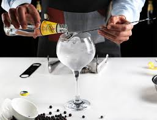

El Gin and Tonic de mi Padr

Clásico, refrescante y elegante, el gintonic es perfecto para disfrutar con calma y buen hielo.
Ingredientes
- 5 cl de ginebra
- Tónica premium
- Hielo grande
- Piel de limón o lima
- Bayas de enebro (opcional)
Preparación
- Enfría una copa balón con hielo.
- Añade la ginebra.
- Aromatiza con limón o enebro.
- Sirve la tónica suavemente.
- Remueve una vez y disfruta.
Home